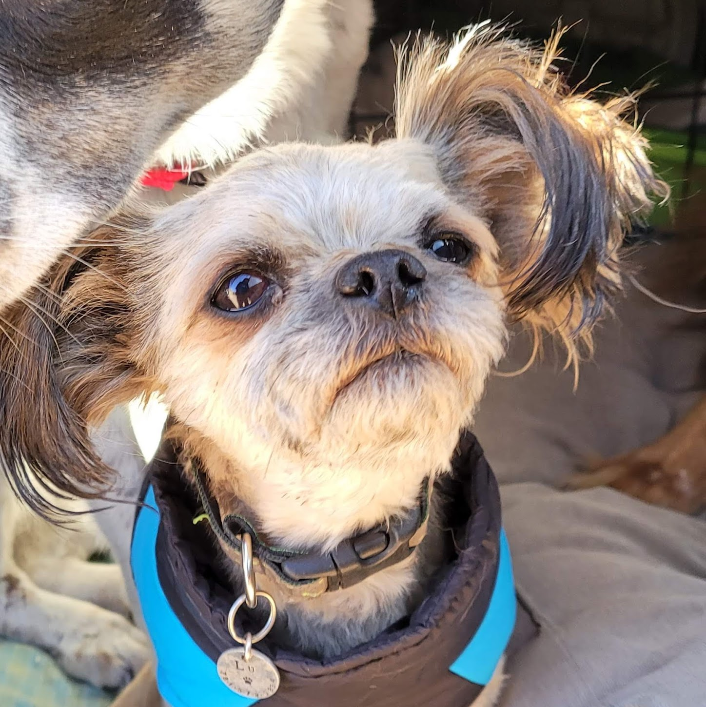

Stars of the Show
 Solace is a red cattle dog
mix born in 2017 and adopted from a rescue
(ARDRA) as a
puppy in 2017. He is beautiful, dramatic, anxious, and loving (in
his own special way). Sol loves his sisters, but loves his mama more
than anything. Like, it's borderline a problem how much this dog
loves me lol He's a good boy, despite how nuts he drives me
sometimes!
Solace is a red cattle dog
mix born in 2017 and adopted from a rescue
(ARDRA) as a
puppy in 2017. He is beautiful, dramatic, anxious, and loving (in
his own special way). Sol loves his sisters, but loves his mama more
than anything. Like, it's borderline a problem how much this dog
loves me lol He's a good boy, despite how nuts he drives me
sometimes!
Fate is a white and black polkadotty rez mutt born in 2019 and pup-napped (rescued) from a parking lot, with a busted back leg, at roughly 4 months old. This girl is snuggly, awkward, funny, and loyal. She LOVES her kitty and they play like they're the same species. She's also very protective of her sensitive older brother. She is my heart and soul dog, truly.
 Lu is a little sandy colored chihuahua pekingese mix born in 2017 and adopted in 2019 from the humane society I was working at at the time (DHS). She is independent, fiesty, demanding, bossy, and above all, unbearably adorable! She'd sell me for a belly rub in a heartbeat and I love that about her!
Hudson is an itty bitty buff colored kitty born in 2020 who showed up on my doorstep at about 8 months old, hungry and filthy, and never left (despite me trying to adopt him out to a friend- thank goodness THAT didn't work out!). He is the most affectionate of my crew; he's sweet, silly, talkative, and snuggly. He loves to hide when I bring the dogs back in from walks and then zoom out and pounce on them. He also loves to sleep on my face.